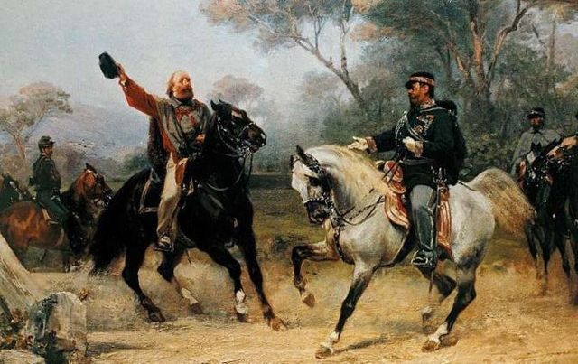

Sejarah Italia
Pendirian Kerajaan Italia merupakan hasil dari upaya-upaya yang dilakukan para nasionalis Italia dan pengikut kerajaan yang setia kepada Wangsa Savoy untuk mendirikan sebuah negara persatuan yang mencakupi semua wilayah di Semenanjung Italia. Dalam konteks revolusi liberal 1848 yang menyapu seluruh Eropa, sebuah perang yang gagal dideklarasikan oleh Austria. Kerajaan Sardinia lagi-lagi menyerang Kekaisaran Austria dalam Perang Kemerdekaan Italia Kedua pada tahun 1859, dengan bantuan dari Prancis, yang berdampak pada dibebaskannya Langobardi.
Sejak dua dasawarsa terakhir pada abad ke-19, Italia berkembang menjadi kuasa kolonial dengan memaksa Somalia, Eritrea, dan kemudian Libya dan Dodecanese untuk berada di bawah kekuasaannya. Pada Perang Dunia I, Italia awalnya tak-memihak, tetapi pada tahun 1915 Italia menandatangani perjanjian rahasia, yaitu Traktat London, memasuki Entente Tiga dengan ketentuan akan menerima Trento, Trieste, Istria, dan Dalmasia dari Austria-Hungaria—juga beberapa bagian Kesultanan Utsmaniyah. Pada Perang Dunia I, lebih dari 650.000 serdadu Italia gugur dan ekonomi mengalami keruntuhan. Di bawah beberapa perjanjian damai, yakni Traktat Saint-Germain-en-Laye (1919), Traktat Rapallo (1920), dan Traktat Roma (1924), Italia memperoleh sebagian besar wilayah terjanji, termasuk pelabuhan Hungaria Fiume, tetapi tidak Dalmasia (kecuali Zara), membolehkan para nasionalis mendefinisikan kejayaan ini sebagai "kejayaan terpotong".